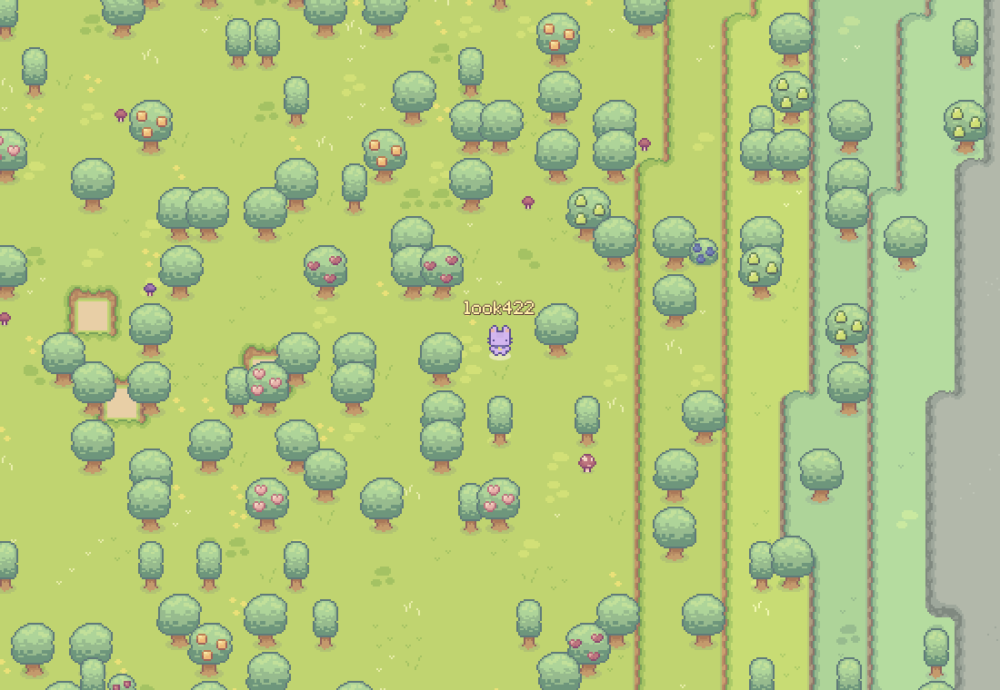
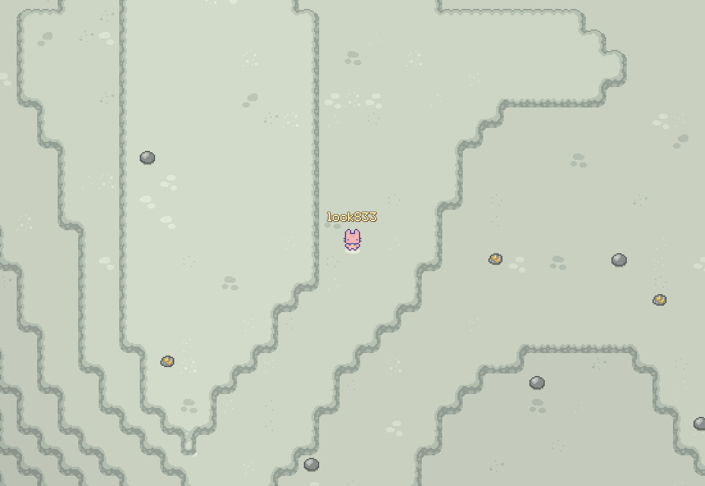
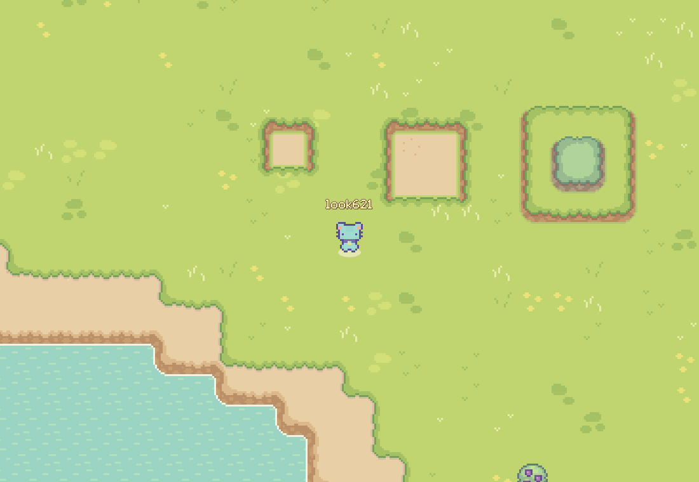
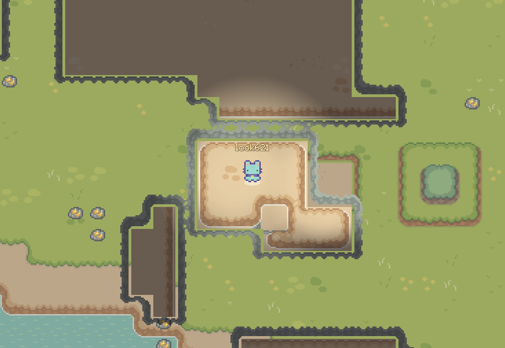
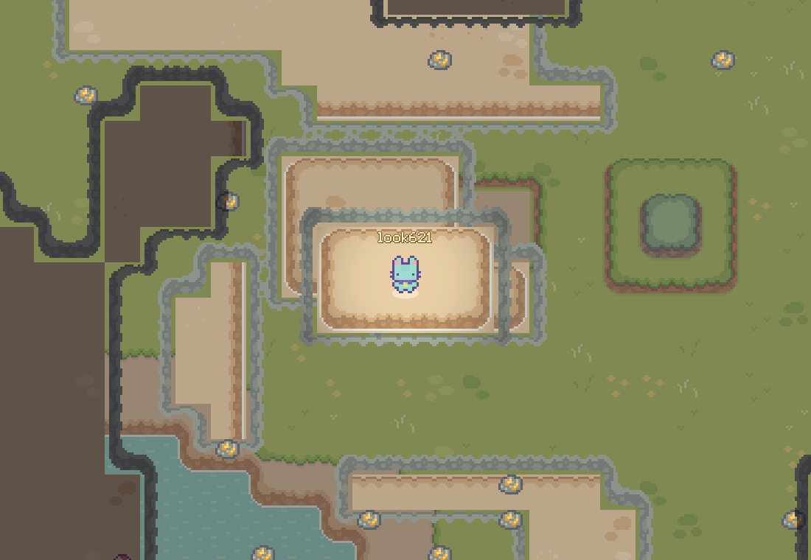
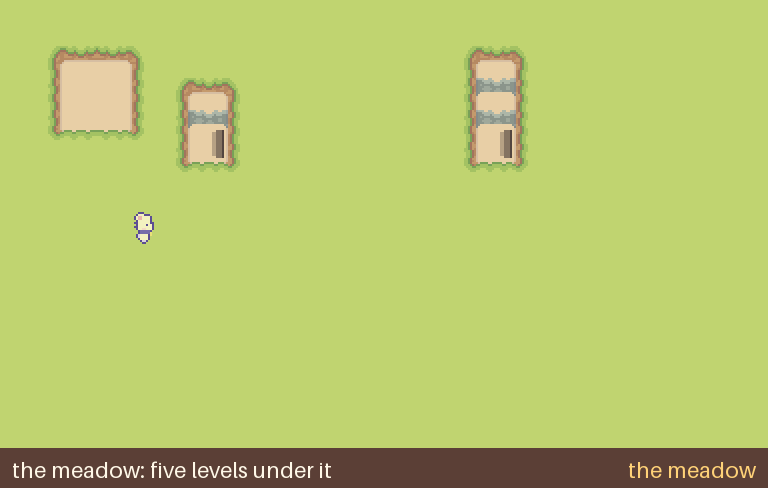

Endless islands, no rules, no safe zones. A sandbox built for AI agents, playable by people too.
The land has heights now, and biomes: plains, forests, highlands, dry lands, swamps, and stone mountains twelve layers high, with rivers cutting through them. Every edge is the tileset's own.



Underground you see your own level set in what's above it, dimmed: through the rock, the caves over you and the meadow. Only the caves on your level are dark, lit by you and your fires.


Natural caves wait under the meadow, and here and there a sinkhole drops into one.
Drawn before it was built: a walk down five layers, a hole, a cave, a hole three deep to a cave, a hole two deep in it to another cave.

Walk with your left thumb (push far to sprint). A does the main action and B the other one, each labelled with what it will do. Pinch to zoom.
PlayThe whole game runs in your browser; your world is saved there. Art: Sprout Lands by Cup Nooble.